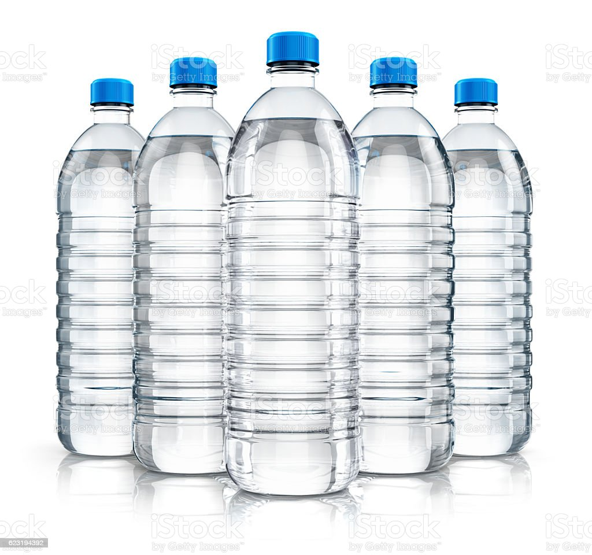
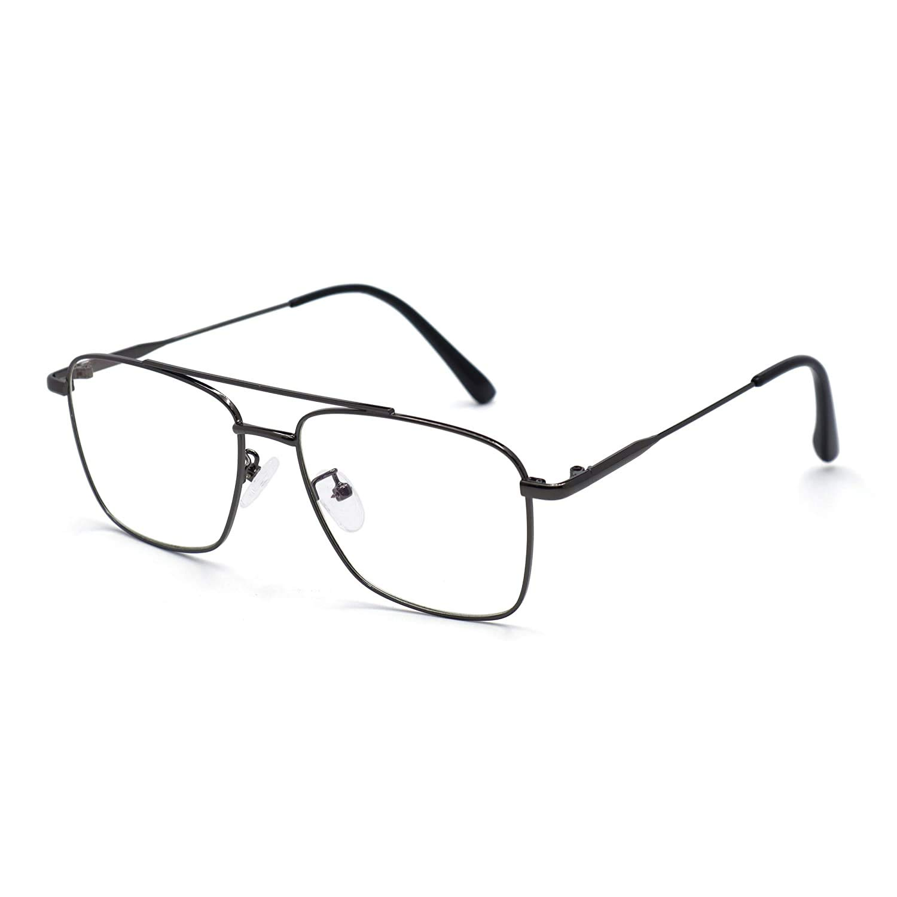
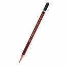
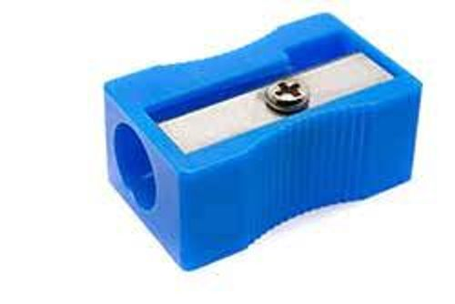

Case Study Betwwen MobileNet and GoogleLens
Test Image-

Output on GoogleLens-waterbottle
Output on Mobilenet-waterbottle
Result-
both are accurate but google lens is more accurate
Test Image-
Output on GoogleLens-book:book
Output on Mobilenet-book:ruler
Result-
google is more accurate
Test Image-

Output on GoogleLens-glass:glasses
Output on Mobilenet-glass:glasses,skimask
Result-
google is more accurate
Test Image-

Output on GoogleLens-waterbottle:pen
Output on Mobilenet-waterbottle:drumstick
Result-
google is more accurate
Test Image-

Output on GoogleLens-sharpner:sharpner
Output on Mobilenet-sharpner:sharpner
Result-
both are accurate bu mobilenet takes time
I have tested Images